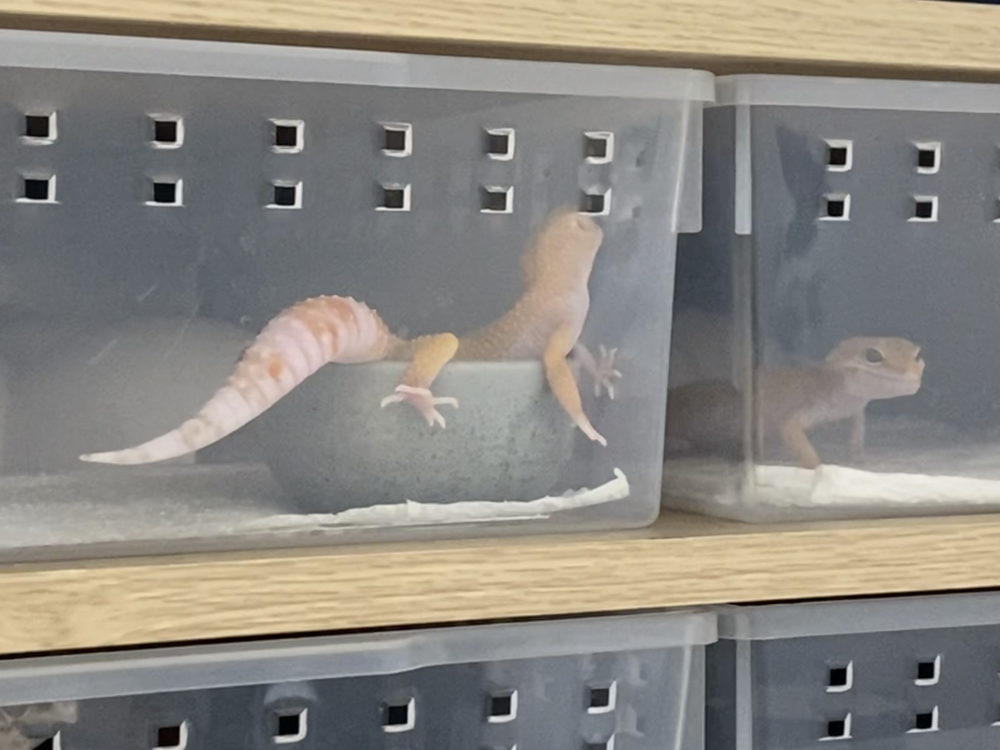

Leopard Gecko
The leopard gecko is a ground-dwelling lizard native to the rocky dry grassland and desert regions of Afghanistan, Iran, Pakistan, India, and Nepal.

Leopard geckos are opportunistic predators that eat a variety of prey items. Invertebrates are presumed to make up the majority of wild geckos' diets, but in captivity they will also eat small vertebrate prey if given the opportunity, including mouse pups and even hatchling leopard geckos.